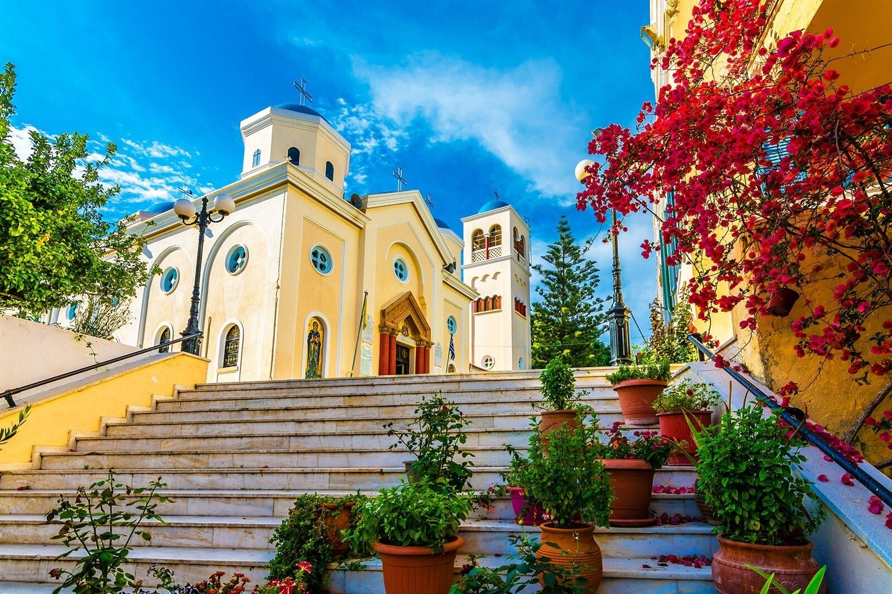

Binnen
Fresco’s en iconen, zilveren kroonluchters en een vloer van kiezelmozaïek. Veel mensen steken een kaarsje aan. Meestal open van de ochtend tot de avond. Wees stil als er een dienst is.

Grote orthodoxe parochiekerk in het centrum. Na de aardbeving van 1933 bleef ze grotendeels staan. Na 2017 was ze dicht voor herstel en is ze weer open.
Fresco’s en iconen, zilveren kroonluchters en een vloer van kiezelmozaïek. Veel mensen steken een kaarsje aan. Meestal open van de ochtend tot de avond. Wees stil als er een dienst is.